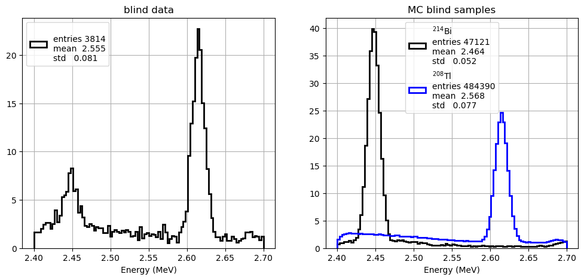
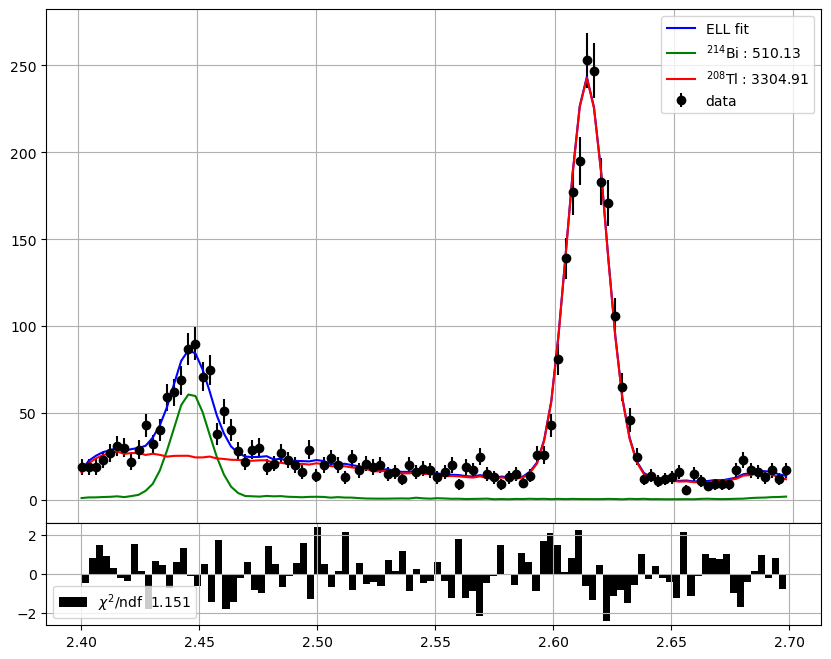

Expected number of background events#
Objectives#
Estimate the total number of background events
Estimate the number of selected background events in the energy enlarged window and in the RoI
Analysis#
We will use a blind data sample: data where the signal events have been removed by a selection, which we call the blind selection.
The blind selection removes from the full data the signal events while retaining most of the background events.
We will compute the efficiency of the blind selection on simulated background samples, that is: \(\epsilon^k_b\) with \(k = \mathrm{Bi}, \mathrm{Tl}\).
We will estimate the number of background events in the blind sample, \(n_b^k\) with \(k = \mathrm{Bi}, \mathrm{Tl}\).
We estimate the number of background events in the RoI given the selection efficiency in the RoI, \(\epsilon^k_{RoI}\):
We also estimate the number of background events in the enlarged energy window, \(n^k_E\):
with \(k = \mathrm{Bi}, \mathrm{Tl}\).
Remember the selection in the RoI region has the following cuts:
* sel_ntracks, sel_eblob2, sel_eroi
While the selection in the enlarged energy window:
* sel_ntracks, sel_eblob2, sel_erange
Estimation of the background events in the blind sample#
We estimate the number of background events \(n^\mathrm{Bi}_b, \, n^{\mathrm{Tl}}_b\) as the values that minimise the \(-2 \log\) extended maximum likelihood.
We first define the PDF of the energy, \(E\), for each background sample, \(g_k(E), \;\; k = \mathrm{Bi}, \mathrm{Tl}\), using simulated data.
We combine the PDFs into an extended likelihood, \(\mathcal{L}({\bf E} |{\bf n}_b)\), where \({\bf n}_b = (n^{\mathrm{Bi}}_b, n^{\mathrm{Tl}}_b)\), \(n_b = n^{\mathrm{Bi}}_b + n^{\mathrm{Tl}}_b\), and \({\bf E}\) are the energies of the \(m\) events in the blind sample, \(E_i, \;\, i= 1, \dots, m\):
where \(g(m | n_b)\) is the Poisson probability of observing \(m\) events given a mean of \(n_b\) blind events.
Finally, we estimate the parameters \(n^\mathrm{Bi}_b, \, n^{\mathrm{Tl}}_b\) by minimising:
Analysis#
Import modules#
%matplotlib inline
%load_ext autoreload
%autoreload 2
The autoreload extension is already loaded. To reload it, use:
%reload_ext autoreload
import numpy as np
import tables as tb
import pandas as pd
import matplotlib.pyplot as plt
import scipy.stats as stats # statistics and Many PDFs
#import scipy.optimize as optimize # Minimize functions
import warnings
warnings.filterwarnings('ignore')
import os, sys
from pathlib import Path
# Find the project root: honours FANAL_ROOT env-var, otherwise walks up from cwd
_env = os.environ.get('FANAL_ROOT') or os.environ.get('USCFANALDIR')
if _env and Path(_env, 'data').is_dir():
rootpath = str(Path(_env).resolve())
else:
rootpath = str(next(p for p in [Path.cwd(), *Path.cwd().parents]
if (p / 'data').is_dir() and (p / 'ana').is_dir()))
if rootpath not in sys.path:
sys.path.insert(0, rootpath)
print('Fanal root : ', rootpath)
Fanal root : /Users/hernando/work/docencia/FPII-fanal/USC-FPII-Fanal
import core.pltext as pltext # extensions for plotting histograms
import core.hfit as hfit # extension to fit histograms
import core.efit as efit # Fit Utilites - Includes Extend Likelihood Fit with composite PDFs
import core.utils as ut # generic utilities
import ana.fanal as fn # analysis functions specific to fanal
import ana.pltfanal as pltfn # plotting for fanal
import collpars as collpars # collaboration specific parameters
pltext.style()
Parameters#
coll = collpars.collaboration
sel_erange = collpars.sel_erange
sel_eroi = collpars.sel_eroi
eff_Bi_E = collpars.eff_Bi_E
eff_Tl_E = collpars.eff_Tl_E
eff_Bi_RoI = collpars.eff_Bi_RoI
eff_Tl_RoI = collpars.eff_Tl_RoI
print('Collaboration : {:s}'.format(coll))
print('Energy range : ({:6.3f}, {:6.3f}) MeV'.format(*sel_erange))
print('RoI range : ({:6.3f}, {:6.3f}) MeV'.format(*sel_eroi))
print('Bi eff in E range : {:6.4f} %'.format(100.*eff_Bi_E))
print('Tl eff in E range : {:6.4f} %'.format(100.*eff_Tl_E))
print('Bi eff in RoI : {:6.4f} %'.format(100.*eff_Bi_RoI))
print('Tl eff in RoI : {:6.4f} %'.format(100.*eff_Tl_RoI))
Collaboration : new_gamma
Energy range : ( 2.400, 2.700) MeV
RoI range : ( 2.430, 2.480) MeV
Bi eff in E range : 1.8100 %
Tl eff in E range : 0.7280 %
Bi eff in RoI : 1.5300 %
Tl eff in RoI : 0.0195 %
Data#
#dirpath = '/Users/hernando/docencia/master/Fisica_Particulas/USC-Fanal/data/'
filename = '/data/fanal_' + coll + '.h5'
print('Data path and filename : ', rootpath + filename)
mcbi = pd.read_hdf(rootpath + filename, key = 'mc/bi214').fillna(0.) # MC Bi
mctl = pd.read_hdf(rootpath + filename, key = 'mc/tl208').fillna(0.) # MC Tl
data_blind = pd.read_hdf(rootpath + filename, key = 'data/blind').fillna(0.) # blind data
mc_samples = [mcbi, mctl]
sample_names = ['Bi', 'Tl']
sample_names_latex = [r'$^{214}$Bi', r'$^{208}$Tl']
Data path and filename : /Users/hernando/work/docencia/FPII-fanal/USC-FPII-Fanal/data/fanal_new_gamma.h5
Estimate blind selection efficiency in MC#
# apply the blind selection to the mc samples to obtain blind mc samples
def efficiency(mask):
return float(sum(mask)/len(mask))
mask_bi = fn.selection_blind(mcbi)
mask_tl = fn.selection_blind(mctl)
eff_Bi_blind = efficiency(mask_bi)
eff_Tl_blind = efficiency(mask_tl)
mc_blind_samples = (mcbi[mask_bi], mctl[mask_tl])
print('Bi blind eff : {:6.4f} %'.format(100.*eff_Bi_blind))
print('Tl blind eff : {:6.4f} %'.format(100.*eff_Tl_blind))
Bi blind eff : 78.2949 %
Tl blind eff : 70.4775 %
Energy distribution of the blind data and MC samples#
def plot_energy(df, label = '', bins = 100):
pltext.hist(df.E, bins, range = sel_erange, label = label, density = True, lw = 2)
plt.xlabel('Energy (MeV)');
subplot = pltext.canvas(2)
subplot(1)
plot_energy(data_blind)
plt.title('blind data');
subplot(2)
for i, df in enumerate(mc_blind_samples):
plot_energy(df, label = sample_names_latex[i])
plt.legend(); plt.title('MC blind samples');

Estimate the number of background events in the blind-data#
Estimate the number of events of Bi and Tl:
Obtain the PDFs for a reference variable, i.e. energy, for each blind sample.
Generate a combined PDF where the parameters are the number of events of each sample.
Estimate the number of blind Tl and Bi events fitting the energy distribution to the combined PDF.
Compute the total number of Tl and Bi using the efficiencies of the blind selection in the MC samples.
nguess = (1000., 1000.)
varname = 'E'
refnames = (varname,)
refranges = (sel_erange,)
fit = fn.prepare_fit_ell(mc_blind_samples, nguess, refnames, refranges)
result, enes, ell, _ = fit(data_blind)
nevts_blind = result.x
pltfn.plot_fit_ell(enes, nevts_blind, ell, parnames = sample_names_latex);

Compute the total number of background events#
n_Bi_blind = nevts_blind[0]
n_Tl_blind = nevts_blind[1]
print(' number of blind events Bi : {:6.3f}'.format(n_Bi_blind))
print(' number of blind events Tl : {:6.3f}'.format(n_Tl_blind))
number of blind events Bi : 510.126
number of blind events Tl : 3304.908
Number of background events in RoI and E range#
Exercise Compute the number of bkg events for each sample in the Energy range and in RoI
# Compute the total number of Bi and Tl events, and the expected
# number of events in the energy range and in the RoI.
#
# Use the formulas:
# n_k_total = n_k_blind / eff_k_blind
# n_k_E = n_k_total * eff_k_E
# n_k_RoI = n_k_total * eff_k_RoI
#
# where k = Bi, Tl
# YOUR CODE HERE
# Print the total, energy-range, and RoI event counts for Bi and Tl.
# Define the variables: n_Bi_total, n_Tl_total, n_Bi_E, n_Tl_E, n_Bi_RoI, n_Tl_RoI
# These will be written to collpars.py in the next cell.
# YOUR CODE HERE
Notation-to-code reference#
Math |
Python variable |
Description |
|---|---|---|
— |
|
Detector exposure (kg \(\cdot\) y) |
— |
|
Signal acceptance |
\(\epsilon^\mathrm{Bi}_b\) |
|
\(^{214}\)Bi blind selection efficiency |
\(\epsilon^\mathrm{Tl}_b\) |
|
\(^{208}\)Tl blind selection efficiency |
\(n^\mathrm{Bi}_b\) |
|
\(^{214}\)Bi events in blind sample |
\(n^\mathrm{Tl}_b\) |
|
\(^{208}\)Tl events in blind sample |
\(n^\mathrm{Bi}_\text{total}\) |
|
Total \(^{214}\)Bi events (\(= n^\mathrm{Bi}_b / \epsilon^\mathrm{Bi}_b\)) |
\(n^\mathrm{Tl}_\text{total}\) |
|
Total \(^{208}\)Tl events (\(= n^\mathrm{Tl}_b / \epsilon^\mathrm{Tl}_b\)) |
\(n^\mathrm{Bi}_E\) |
|
\(^{214}\)Bi events in energy range (\(= n^\mathrm{Bi}_\text{total} \cdot \epsilon^\mathrm{Bi}_E\)) |
\(n^\mathrm{Tl}_E\) |
|
\(^{208}\)Tl events in energy range (\(= n^\mathrm{Tl}_\text{total} \cdot \epsilon^\mathrm{Tl}_E\)) |
\(n^\mathrm{Bi}_{RoI}\) |
|
\(^{214}\)Bi events in RoI (\(= n^\mathrm{Bi}_\text{total} \cdot \epsilon^\mathrm{Bi}_{RoI}\)) |
\(n^\mathrm{Tl}_{RoI}\) |
|
\(^{208}\)Tl events in RoI (\(= n^\mathrm{Tl}_\text{total} \cdot \epsilon^\mathrm{Tl}_{RoI}\)) |
exposures = {'new_alpha': 500, 'new_beta': 1000, 'new_gamma': 1000,
'new_delta': 3000, 'new_epsilon': 3000}
acc_bb = 0.79
exposure = exposures[coll]
import ana.fanal_display as fdisp
# Check your values before writing to collpars.py
fdisp.display_collpars([
('—', 'exposure', exposure, '.2f'),
('—', 'acc_bb', acc_bb, '.3f'),
(r'\epsilon^\mathrm{Bi}_b', 'eff_Bi_blind', eff_Bi_blind, '.3f'),
(r'\epsilon^\mathrm{Tl}_b', 'eff_Tl_blind', eff_Tl_blind, '.3f'),
(r'n^\mathrm{Bi}_b', 'n_Bi_blind', n_Bi_blind, '.3f'),
(r'n^\mathrm{Tl}_b', 'n_Tl_blind', n_Tl_blind, '.3f'),
(r'n^\mathrm{Bi}_\text{total}','n_Bi_total', n_Bi_total, '.3f'),
(r'n^\mathrm{Tl}_\text{total}','n_Tl_total', n_Tl_total, '.3f'),
(r'n^\mathrm{Bi}_E', 'n_Bi_E', n_Bi_E, '.3f'),
(r'n^\mathrm{Tl}_E', 'n_Tl_E', n_Tl_E, '.3f'),
(r'n^\mathrm{Bi}_{RoI}', 'n_Bi_RoI', n_Bi_RoI, '.3f'),
(r'n^\mathrm{Tl}_{RoI}', 'n_Tl_RoI', n_Tl_RoI, '.3f'),
])
Write out#
We write into the collpars.py file the number of events.
write = True
if (write):
of = open('collpars.py', 'a')
of.write('exposure = {:6.2f}'.format(exposure)+' # kg y \n')
of.write('acc_bb = {:6.3f}'.format(acc_bb)+'\n')
of.write('eff_Bi_blind = {:6.3f}'.format(eff_Bi_blind)+'\n')
of.write('eff_Tl_blind = {:6.3f}'.format(eff_Tl_blind)+'\n')
of.write('n_Bi_total = {:6.3f}'.format(n_Bi_total)+'\n')
of.write('n_Bi_blind = {:6.3f}'.format(n_Bi_blind)+'\n')
of.write('n_Bi_E = {:6.3f}'.format(n_Bi_E)+'\n')
of.write('n_Bi_RoI = {:6.3f}'.format(n_Bi_RoI)+'\n')
of.write('n_Tl_total = {:6.3f}'.format(n_Tl_total)+'\n')
of.write('n_Tl_blind = {:6.3f}'.format(n_Tl_blind)+'\n')
of.write('n_Tl_E = {:6.3f}'.format(n_Tl_E)+'\n')
of.write('n_Tl_RoI = {:6.3f}'.format(n_Tl_RoI)+'\n')
of.close()